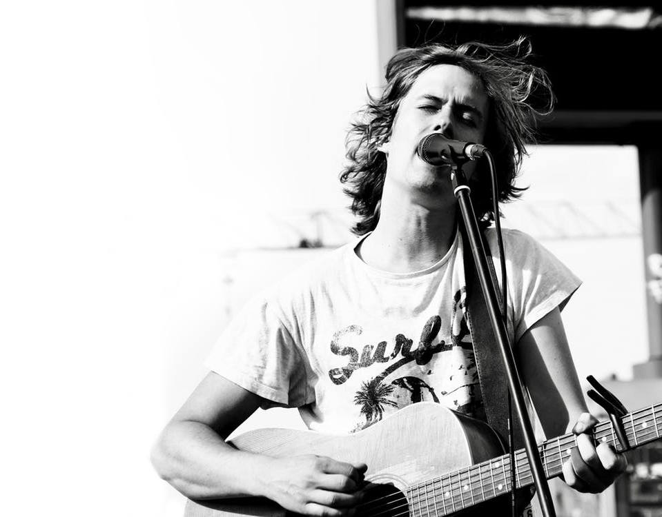
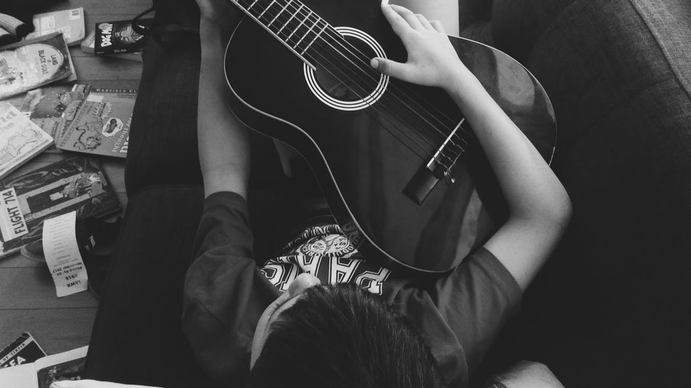

Welcome to Indie on the Move's compiled listing of annual music
festivals, conferences, and business seminars helping bands and
musicians increase their industry knowledge, broaden their networking
reach, and spread the word about their music, shows, and tours.
Find Your Perfect Festival
DISCOVER THE BEST MUSIC FESTIVAL FOR YOU AND GET TICKETS.
Festival season is here and is real. If you’re wishing you were in a
field in your wellies, listening to the soundtrack of summer, don’t
fear. We’ve picked out the top festivals for next year so you can get
ahead of the pack and be poised to grab tickets as soon as they’re
released.

The best music festivals
From finding your inner hippie on top of a Bulgarian mountain, to camping under the stars in the
Sahara desert, these
festivals are sure to tick off a few experiences you’d never dreamed of doing before.
After all, it is at these annual events that people from all corners of the music industry come
together to learn about
the newest trends in digital media, social networking and music marketing, discuss and
strategize
recent developments in
every sector of the music marketplace, and meet and greet up-and-coming artists that are
creating a
buzz.

Follow us
Glastonbury Festival
23-25 JANUARY, LA
And with regards to the larger festivals like Lollapalooza or Bonnaroo, be sure to think outside of the
box. While many
of them do not regularly book independent acts for their official showcases, the national and
international bands that
do perform often draw some of the biggest built-in crowds imagineable and provide a large influx of
music lovers to each
respective event location.
Glastonbury Festival
23-25 JANUARY, LA
And with regards to the larger festivals like Lollapalooza or Bonnaroo, be sure to think outside of the
box. While many
of them do not regularly book independent acts for their official showcases, the national and
international bands that
do perform often draw some of the biggest built-in crowds imagineable and provide a large influx of
music lovers to each
respective event location.
.jpeg)

.jpeg)